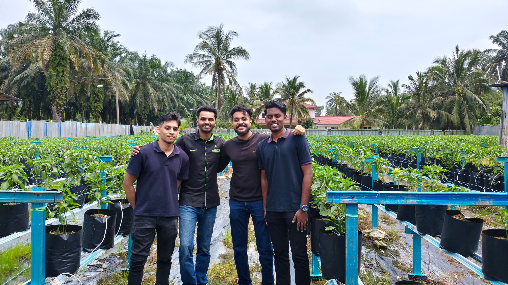

Listen
We speak with farmers and farm workers about their daily challenges.
Field Research
We visit farms, speak with farmers, and study real operating challenges. These field insights help us research practical automation systems for Malaysian agriculture.
StarGrid is currently in the research and development phase.

Our Approach
Before developing a solution, we need to understand how farms operate every day. Our team studies labour challenges, irrigation systems, fertiliser use, electrical reliability, equipment maintenance, and existing farm workflows.
We speak with farmers and farm workers about their daily challenges.
We study equipment, processes, infrastructure, and working conditions.
We use field findings to guide our engineering research and product development.
Research Journal
Follow our research journey as we learn from farms and agricultural communities.

[Teluk Intan, Perak]
The StarGrid team visited a commercial chili farm to study daily fertigation workflows and how they manage their daily challenges.
Our goal was to observe their daily fertigation methods and analyze how current smart technologies perform in a real-world, high-volume environment.
We inspected their pump house infrastructure and nutrient mixing routines to see how existing automation tools withstand the physical demands of the farm.
Return to Field UpdatesResearch Themes
Understanding how farm systems can continue operating safely and reliably.
Exploring ways to reduce unnecessary water, fertiliser, and energy use.
Learning how one system could support different farm sizes and layouts.
Designing technology that is simple to operate, maintain, and understand.
Research Invitation
Are you a farmer, farm manager, agricultural officer, or industry partner? We would value the opportunity to learn about your operation and the challenges you face.
A visit is for research and discussion. It does not require you to purchase or test a product.